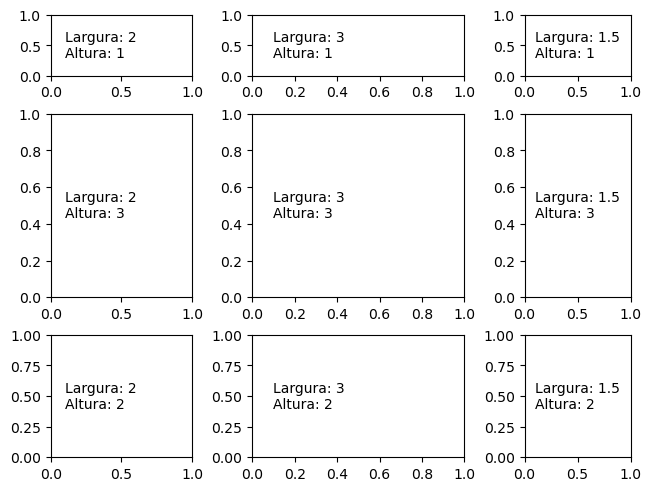
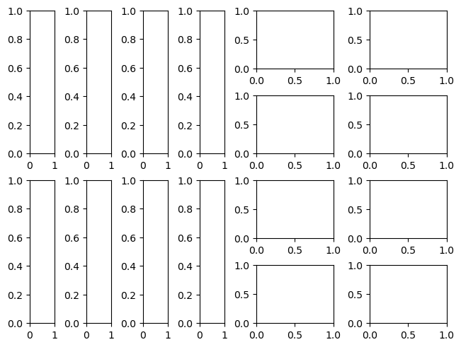
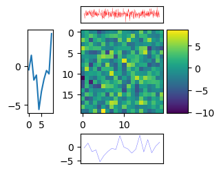
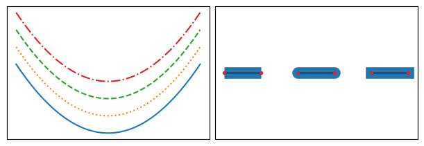
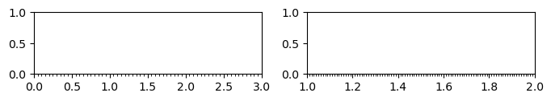

Guia rápido de plotagem - matplotlib
Contents
Guia rápido de plotagem - matplotlib#
Plotagem genérica em modo explícito (interface “OO-like”)
import matplotlib.pyplot as plt
# fig é objeto matplotlib.Figure
# ax é objeto matplotlib.Axes
fig, ax = plt.subplots(nrows=3,
ncols=2,
sharex=True,
sharey=True,
num=1,
clear=True,
constrained_layout=True, # controle de interpadding
figsize=(4,2)
)

Controle da escala de eixos
fig, ax = plt.subplots(1,6,figsize=(10,2),constrained_layout=True)
fig.suptitle('Escala de eixos',fontsize=8)
xmin, xmax, ymin, ymax = ax[0].axis('off')
ax[0].plot([-1,0,1],[1,2,3],'o')
# mesma escala; círculos ficam circulares alterando limites
ax[1].plot([-1,0,4],[1,2,3],'o')
ax[1].axis('equal')
# mesma escala; círculos ficam circulares alterando dimensões da Figure
ax[2].plot([-1,0,4],[1,2,3],'o')
ax[2].axis('scaled')
# limites grandes o bastante para acomodação aos dados
ax[3].plot([-1,0,4],[1,2,3],'o')
ax[3].axis('tight')
# xmax - xmin = ymax - ymin
ax[4].plot([-1,0,4],[1,2,3],'o')
ax[4].axis('square')
# limites customizados
ax[5].plot([-1,0,4],[1,2,3],'o')
ax[5].axis([-3,5,-2,4]) # 1a. forma
ax[5].set_xlim(-3,5); ax[5].set_ylim(-2,4); # 2a. forma

Visibilidade de eixos
fig, ax = plt.subplots(1,5,figsize=(10,2),constrained_layout=True)
fig.suptitle('Visibilidade de eixos',fontsize=8)
ax[0].get_xaxis().set_visible(False)
ax[0].plot([-1,0,1],[1,2,4],'o')
ax[1].get_yaxis().set_visible(False)
ax[1].plot([-1,0,1],[1,2,4],'o')
ax[2].set_axis_off() # axis('off')
ax[2].plot([-1,0,1],[1,2,4],'o')
ax[3].set_visible(True) # visibilidade do Artist
ax[3].plot([-1,0,1],[1,2,4],'o')
ax[3].spines['top'].set_visible(False)
ax[3].spines.bottom.set_visible(False)
ax[4].spines['left'].set_visible(False)
ax[4].spines.right.set_visible(False)

Mosaicos#
Layouts com
GridSpecgs = fig.add_gridspec(m,n): cria mosaicofig.add_subplot(gs[m:,n:]): posiciona plot no mosaico
fig = plt.figure(figsize=(6,2),constrained_layout=True) # figura de background
fig.suptitle('Mosaico gridspec',fontsize=8)
gs = fig.add_gridspec(3,4)
fig_ax1 = fig.add_subplot(gs[0,:])
fig_ax2 = fig.add_subplot(gs[1:,0])
fig_ax3 = fig.add_subplot(gs[1:,1])
fig_ax4 = fig.add_subplot(gs[1,2:])
fig_ax5 = fig.add_subplot(gs[2,2:])
for eixo in fig.axes:
eixo.plot(1,1,'rs')

‘gridspec’ com larguras e alturas variáveis
fig = plt.figure(constrained_layout=True)
w = [2, 3, 1.5]
h = [1, 3, 2]
gs = fig.add_gridspec(ncols=3,
nrows=3,
width_ratios=w,
height_ratios=h)
for row in range(3):
for col in range(3):
ax = fig.add_subplot(gs[row, col])
label = f'Largura: {w[col]}\nAltura: {h[row]}'
ax.annotate(label, (0.1, 0.5), xycoords='axes fraction', va='center')

‘subgridspec’
f = plt.figure(constrained_layout=True)
# primeiro nível
gs0 = f.add_gridspec(1, 2)
# segundo nível
gs00 = gs0[0].subgridspec(2, 4)
gs01 = gs0[1].subgridspec(4, 2)
for a in range(2):
for b in range(4):
f.add_subplot(gs00[a, b])
f.add_subplot(gs01[b, a])

Eixos embutidos
fig, ax = plt.subplots(figsize=(2,2),constrained_layout=True)
x0, y0 = 0.5,0.5
width, height = 0.4,0.2
ax2 = ax.inset_axes(bounds=[x0,y0,width,height])
ax2.plot(0.5,0.5,'o')
ax2.get_xaxis().set_visible(False)
ax2.get_yaxis().set_visible(False)

Eixos apensados
import numpy as np
import matplotlib.pyplot as plt
from mpl_toolkits.axes_grid1 import make_axes_locatable
# dado
data = np.random.normal(0,3,size=(20,20))
# figura
fig,ax = plt.subplots(figsize=(3,3))
im = ax.imshow(data)
# divisor
divider = make_axes_locatable(ax)
# eixos
ax_left = divider.append_axes("left", size="30%", pad=0.4)
ax_left.plot(data.flatten()[:10])
ax_top = divider.append_axes("top", size="20%", pad=0.1)
ax_top.plot(data.flatten(),c='r',lw=0.2)
ax_top.axis('tight')
ax_top.get_xaxis().set_visible(False); ax_top.get_yaxis().set_visible(False)
ax_right = divider.append_axes("right", size="25%", pad=0.05)
plt.colorbar(im,cax=ax_right)
ax_bot = divider.append_axes("bottom", size="35%", pad=0.3)
ax_bot.plot(data.flatten()[:20],c='b',lw=0.2)
ax_bot.axis('tight')
ax_bot.get_xaxis().set_visible(False); ax_top.get_yaxis().set_visible(False)

Estilo de linha e cap#
fig, ax = plt.subplots(1,2,figsize=(6,2),constrained_layout=True)
x = np.linspace(-2,2)
# estilo de linha
linestyles = ['-',':','--','-.']
gap = 1
for lsi in linestyles:
ax[0].plot(x,x**2 + gap,ls=lsi)
gap += 1
ax[0].xaxis.set_visible(False)
ax[0].yaxis.set_visible(False)
# estilo de cap
for x, style in enumerate(['butt', 'round', 'projecting']):
xx = [x, x+0.5]
yy = [0, 0]
ax[1].plot(xx, yy, lw=12, color='tab:blue', solid_capstyle=style)
ax[1].plot(xx, yy, lw=1, color='black')
ax[1].plot(xx, yy, 'o', color='tab:red', markersize=3)
ax[1].xaxis.set_visible(False)
ax[1].yaxis.set_visible(False)

Marcadores#
markers = ['.','o','s','P','X','*','p','D','<','>','^','v', \
'1','2','3','4','+','x','|','_',4,5,6,7, \
'$\\int$','$\\dagger$' ]
fig, ax = plt.subplots(figsize=(5,8),constrained_layout=True)
dom = np.linspace(0,1,30)
gap = 5
for i in range(len(markers)):
ax.plot(dom,dom + gap,ls='',lw=0.5,ms=10,marker=markers[i],markevery=5)
gap += 1
ax.axis('tight');

Controle de ticks e labels#
from matplotlib.ticker import MultipleLocator as ML
from matplotlib.ticker import ScalarFormatter as SF
fig, ax = plt.subplots(1,2,figsize=(8,1))
ax[0].set_xlim(0,3)
ax[0].xaxis.set_minor_locator (ML(0.05))
ax[1].set_xlim(1,2)
ax[1].xaxis.set_minor_locator (ML(0.01))

fig, ax = plt.subplots(figsize=(8,1))
ax.set_xlim(0,3)
ax.xaxis.set_minor_locator (ML(0.1))
ax.xaxis.set_minor_formatter (SF())
ax.tick_params(axis='x' ,which='minor', rotation=90, labelsize=8)
ax.set_xticklabels(ax.get_xticks(),weight='bold');
/var/folders/ll/g0vl8b194pbfyp4cwpzz4p740000gn/T/ipykernel_13950/3390216078.py:6: UserWarning: FixedFormatter should only be used together with FixedLocator
ax.set_xticklabels(ax.get_xticks(),weight='bold');

import matplotlib.pyplot as plt, matplotlib.ticker as mticker
x = list(range(10))
fig, ax = plt.subplots(figsize=(3,3))
ax.plot(x,x)
ax.xaxis.set_major_locator(mticker.FixedLocator([1.5,2.5,4.5]))
ax.set_xticklabels(['a','b','c'])
ax.xaxis.set_tick_params(rotation=45, labelsize=16) # Other solution: ax.tick_params(axis='x', rotation=25)

#
Impressão de propriedades padronizadas/customizadas#
def get_prop(prop):
from matplotlib import rcParams
from re import match
props = {}
for k,v in rcParams.items():
if match(prop,k):
props[k] = v
return props
# get_prop('axes')
Impressão de paletas de cores disponíveis#
def print_palette(opt):
"""Print matplotlib color pallete according to category.
Parameters:
opt (int): option for palette
1: uniform; 2: divergent; 3: ciclic; 4: generic
"""
seq_uniform = {'viridis', 'plasma', 'inferno', 'magma', 'cividis'}
seq_grp_1 = {'Greys', 'Purples', 'Blues', 'Greens', 'Oranges', 'Reds', 'YlOrBr', 'YlOrRd', 'OrRd', 'PuRd', 'RdPu', 'BuPu', 'GnBu', 'PuBu', 'YlGnBu', 'PuBuGn', 'BuGn','YlGn'}
seq_grp_2 = {'binary', 'gist_yarg', 'gist_gray', 'gray', 'bone', 'pink', 'spring', 'summer', 'autumn', 'winter', 'cool', 'Wistia', 'hot', 'afmhot', 'gist_heat','copper'}
sequential = seq_uniform.union(seq_grp_1).union(seq_grp_2)
divergent = {'PiYG', 'PRGn', 'BrBG', 'PuOr', 'RdGy', 'RdBu', 'RdYlBu', 'RdYlGn', 'Spectral', 'coolwarm', 'bwr','seismic'}
ciclic = {'twilight', 'twilight_shifted', 'hsv'}
generic = {'flag', 'prism', 'ocean', 'gist_earth', 'terrain', 'gist_stern', 'gnuplot', 'gnuplot2', 'CMRmap', 'cubehelix', 'brg', 'gist_rainbow', 'rainbow', 'jet', 'turbo', 'nipy_spectral','gist_ncar'}
selector = {1:sequential, 2:divergent, 3:ciclic, 4:generic}
for k,v in selector.items():
if k == opt: print(v)
Renderização de Latex#
from matplotlib.pyplot import xlabel, ylabel
from matplotlib import rc
# ativa Latex
rc('text', usetex=True)
rc('axes', linewidth=2)
rc('font', weight='bold')
fig, ax = plt.subplots(figsize=(3,3))
ax.plot(x,x)
xlabel(r'\textbf{X-AXIS}', fontsize=10);
ylabel(r'f(x)', fontsize=10);